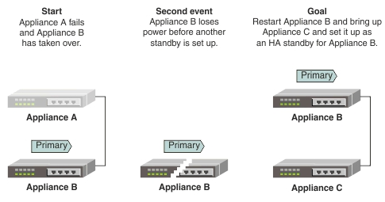

In this scenario, the primary node fails and the standby
node takes over as the new primary node. Before a new backup can be
setup, the new primary node fails. You must restart a new primary
node and set up a new standby node. System administrators can use
the High Availability page in the Amlen WebUI.
The two Eclipse Amlen appliances
must be physically connected. For more information about connecting
appliances, see Configuring the system for High Availability.
The administrative state (AdminState) of the two appliances must also
be enabled. Go to the Network Settings page
to set the administrative state of the appliances.
You can configure appliances for high availability by
using the Amlen WebUI,
or by using the command line. For more information about using the
command line to configure appliances for high availability, see Primary
node fails then standby node fails, bring back last primary node by
using the command line. In this scenario, the content of the
store and configuration of Appliance B is preserved.

- Clean the store on Appliance C:
- Click System Control in the Appliance menu.
- Select maintenance from the Runmode list.
- Stop the server by clicking Stop the server.
- Start the server by clicking Start the server.
- Select the clean store check
box.
- Stop the server by clicking Stop the server.
- Start the server by clicking Start the server.
- Select production from the Runmode list.
- Configure high availability on Appliance C:
- From the Appliance menu, select High
Availability.
- Click Edit in the Configuration panel.
The Edit High Availability Configuration page
is displayed.
- Select the High Availability Enabled check
box.
- Complete the High Availability Group field.
The high availability group is used to automatically configure
appliances to pair with each other. The value must match the value
on Appliance B. When this value is set, you do not need to provide
replication or discovery addresses.
- Click Save.
- Click Restart Later.
- Check the high availability configuration on Appliance
B is correct by selecting High Availability from
the Appliance menu. If you change any settings,
click Save and then click Restart
Later.
Tip: It is recommended,
but not required, to set Appliance B as the preferred primary node.
To set Appliance B as the preferred primary node, select the When
both nodes start in auto-detect mode, this node is the preferred primary
node check box in the Advanced Settings section.
- Stop and then restart the Eclipse Amlen servers on both
of the appliances:
Tip: As a best practice,
stop and restart the standby server first. Then stop and restart the
primary to limit the amount of time that the primary spends waiting
for the standby to become available.
- Click System Control in the Appliance menu.
- Stop the server by clicking Stop the server.
- Start the server by clicking Start the server.
When the HA pair is up and running, you can view the status
of each appliance from the Status menu on the Amlen WebUI. You can view
further information on the status of the appliance by using the System
Control page. You can view further information about the
high availability role of the appliance by using the High
Availability page.